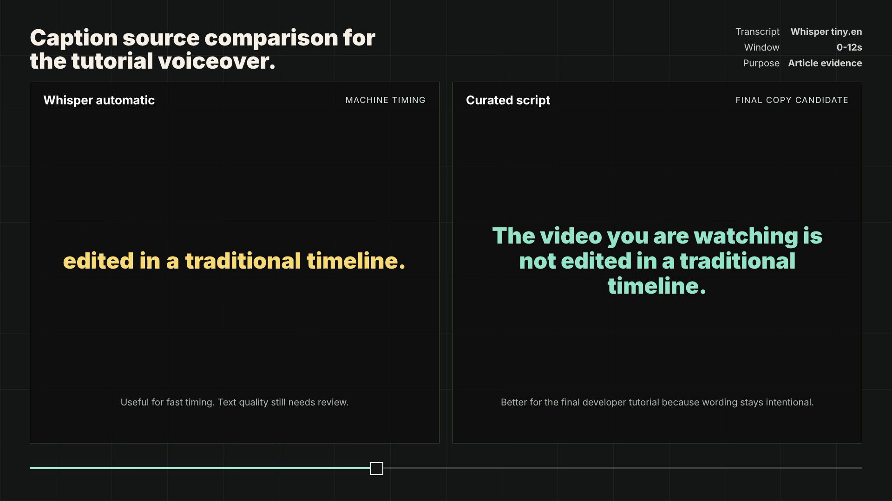
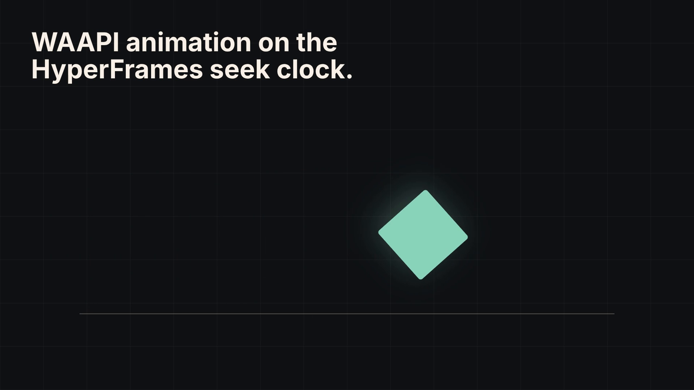
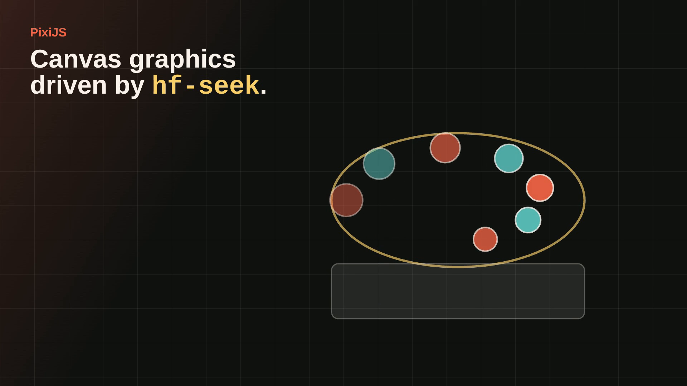

Final demo
Can HyperFrames explain HyperFrames?
A reproducible video build with the mistakes left in.
MP4
Source first
Start from HTML, not an editor timeline.
index.html
style.css
script.md
JOURNAL.md
composition
1920 x 1080
90s at 30fps
Scaffold
hyperframes init --example blank
Created init-blank/
AGENTS.md
CLAUDE.md
hyperframes.json
index.html
meta.json
package.json
Finding: the generated scaffold is structural evidence, but `meta.json` includes a timestamp.
Before render
Check the composition before creating artifacts.
lint0 errors
inspect0 layout issues
validateno console errors
Artifacts
One source can produce different output jobs.
MP4delivery
WebMbrowser
PNGframes
MOVProRes 4444
MOV proof: prores, profile 4444, pixel format yuva444p12le.
Captions
Transcribe, then edit.

Machine timing helped. The final tutorial copy still needed human editing.
Motion
Browser animation can follow the seek clock.


Three.js
Anime.js
D3
Lottie
WAAPI
PixiJS
These are local bridges, not proof that every official adapter package is installable.
Background removal
Use honest fixtures.

background alpha: 0
subject alpha: 255
provider: CPU
The first flat icon fixture passed the command but failed as evidence.
Build log
Mistakes are part of the proof.
Sparse keyframes required re-encoding.
Adapter docs did not match npm availability.
Utility commands still needed host-visible tools.
Mapped, not claimed